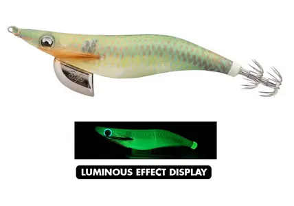

Egis Low Cost
Yamashita Egi OH F/NQS – Análisis completo

🎨 Características
Color base:
Verde oliva con reflejos dorados y pequeños puntos rojizos o anaranjados distribuidos a lo largo del cuerpo.
Ojos:
Verdes y reflectantes, con efecto brillante.
Brillo:
Emite un resplandor verde intenso, visible claramente en la imagen (etiqueta “Luminous”).
Acabado:
Tela mate con patrón de camuflaje natural, imitando perfectamente un camarón o pez pequeño.
🌤️ Condiciones ideales de uso
☁️
Días nublados:
Su tono verde natural se integra muy bien con el entorno sin resultar excesivo.
🌊
Aguas azul/verde:
Excelente camuflaje, ideal cuando los calamares están desconfiados o menos activos.
🌅
Amanecer / Atardecer:
El brillo verde comienza a destacar justo cuando la luz baja, manteniendo visibilidad.
🌙
Noche o aguas turbias:
Su luminiscencia le permite seguir siendo efectivo sin ser tan “estridente” como un rosa o naranja.
🧠 Comportamiento esperado
👉 Egi equilibrado y versátil, pensado para situaciones de actividad media o baja.
👉 Perfecto cuando los calamares están presentes pero no atacan con fuerza.
👉 Su tono natural despierta curiosidad sin generar desconfianza, y el brillo verde añade un toque de atracción nocturna.
👉 Muy útil en zonas con presión de pesca (cuando los calamares ya han visto muchos colores llamativos).
⚙️ Resumen práctico
Condición
Eficiencia
☀️🌊 Día soleado / agua clara
🟢 Alta
☁️💙 Día nublado / aguas azules
🟢🟢 Muy alta
🌙🌑 Noche / aguas oscuras
🟢 Alta
🦑😴 Calamares pasivos
🟢🟢 Muy alta
🦑🔥 Calamares agresivos
🟡 Media
🛒 Comprar Modelo F